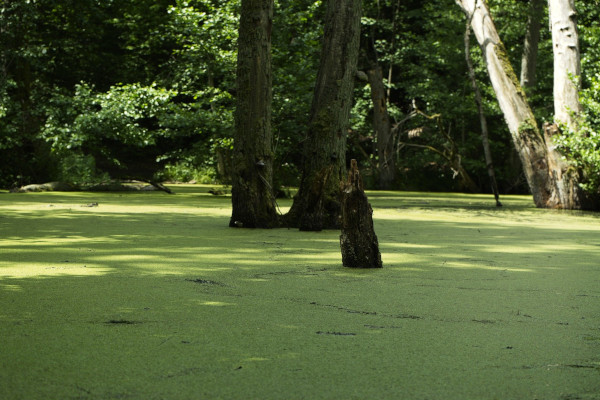

O quê são lentilhas d’água?
Lentilhas d’água são pequenas plantas aquáticas de rápido desenvolvimento, isto é, elas podem se multiplicar com uma velocidade assustadora.
Essas plantinhas têm um número de folhas bem reduzido. Algumas espécies apresentam apenas duas folhas enquanto outras somente uma estrutura dessas. Em relação a raízes a divergência, semelhante às folhas, algumas vindo a ter raízes enquanto outras não. As espécies destas plantas não possuem caule.
Sendo assim, elas se assemelham a uma folhinha em cima d’água. Algumas tendo e outras não as raízes.
Seu tamanho é bem reduzido. A maioria não chega a ter 1cm de comprimento. Quando vistas de longe em um corpo d’água parece um tapete verde. Eu acho muito bonito.

Onde são encontradas?
Elas têm distribuição cosmopolita, ou melhor, podem ser encontradas em qualquer lugar. Não sendo bem assim. Nós podemos achar elas em locais com água parada, como em açudes. Elas também podem ser achadas em riachos, desde que a camada superior seja de água para, isto é, que não se movimente.
Mesmo alguns locais com condições para elas podem vir a não apresentar. Mas um local em seu município vai ter lentilhas.
Para que servem?
As lentilhas são plantas que podem ser usadas para alimentar animais até inclusive humanos como nós. Além disso, elas fazem muito bem para os locais onde elas se encontram pelo fato delas limparem as águas nas quais estão.